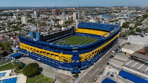
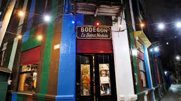

Arte · Historia · Destacado
Caminito
El pasaje más colorido de Buenos Aires, cuna del tango y del arte popular.
Más información
El pasaje a cielo abierto más famoso de Buenos Aires. Sus conventillos pintados con los colores de los barcos del Riachuelo se convirtieron en el símbolo visual de La Boca. Aquí Benito Quinquela Martín impulsó la transformación del pasaje en museo vivo, mezclando arte, arquitectura y cultura popular en cada rincón.
- Horario: Todos los días, 9:00 – 19:00
- Entrada: Gratuito
- Dirección: Caminito s/n, La Boca

Deporte
La Bombonera
El estadio de Boca Juniors, uno de los más icónicos del mundo.
Más información
El estadio mítico del Club Atlético Boca Juniors, inaugurado en 1940. Su diseño único con tres tribunas verticales y una horizontal crea una acústica incomparable. La pasión xeneize lo convierte en uno de los estadios más impresionantes y emotivos del mundo. Sede de la historia grande del fútbol argentino.
- Horario: Visitas guiadas: Mar–Dom 10:00 – 18:00
- Entrada: $3.500 ARS
- Dirección: Brandsen 805, La Boca

Historia · Arte
Museo Quinquela
La obra y legado del pintor del Riachuelo.
Más información
El museo dedicado al pintor más amado de La Boca, construido por el propio Quinquela en 1938. Alberga más de 1.000 obras que retratan la vida del puerto, los obreros y el barrio con pinceladas gruesas y colores vibrantes. También exhibe mascarones de proa y obras de otros artistas argentinos.
- Horario: Mar–Vie 10:00–17:30 · Sáb–Dom 11:00–17:30
- Entrada: $1.200 ARS
- Dirección: Av. Pedro de Mendoza 1835, La Boca

Arte
Arte Callejero
Murales y esculturas en cada esquina del barrio.
Más información
La Boca es un museo a cielo abierto. Sus calles están repletas de murales, esculturas y performances que convierten cada esquina en una obra de arte. Artistas de todo el país y el mundo dejan su huella en las paredes del barrio, generando un diálogo permanente entre el arte y la comunidad.
- Horario: Siempre visible
- Entrada: Gratuito
- Dirección: Barrio de La Boca, varias calles

Nocturnidad · Arte
Tango en Vivo
Milongas y shows nocturnos en la cuna del tango.
Más información
La Boca es la cuna del tango. Sus milongas tradicionales y escenarios modernos ofrecen shows en vivo noche a noche, donde bailarines de todo el mundo se mezclan con los vecinos del barrio. Una experiencia imprescindible para entender el alma de Buenos Aires.
- Horario: Noche: desde las 21:00
- Entrada: Desde $5.000 ARS
- Dirección: Diversas ubicaciones en La Boca

Gastronomía
Bodegones y Pasta
La cocina italiana del Riachuelo, viva en cada mesa.
Más información
Los bodegones y restaurantes del Caminito y sus alrededores ofrecen cocina italiana y porteña con vistas al paseo más famoso del barrio. Desde pastas caseras heredadas de los inmigrantes genoveses hasta parrillas tradicionales, la gastronomía de La Boca es un viaje en sí misma.
- Horario: 12:00 – 23:00 (varía por local)
- Entrada: Libre
- Dirección: Zona Caminito, La Boca

Historia · Destacado
Vuelta de Rocha
El corazón histórico del barrio, a orillas del Riachuelo.
Más información
El Riachuelo fue el origen de todo. La curva de la Vuelta de Rocha, donde el río gira y forma un pequeño puerto, fue el punto de llegada de los primeros inmigrantes genoveses. Hoy es un paseo histórico con vistas al Puente Transbordador y al antiguo puerto, escenario de la obra de Quinquela.
- Horario: Siempre accesible
- Entrada: Gratuito
- Dirección: Av. Pedro de Mendoza, La Boca

Historia
Puente Transbordador
Patrimonio industrial del Riachuelo, construido en 1914.
Más información
Patrimonio histórico de la Ciudad de Buenos Aires, este puente construido en 1914 fue el primero de su tipo en Latinoamérica. Su estructura metálica imponente domina el paisaje del Riachuelo y es hoy un símbolo del pasado industrial de La Boca y de la ciudad.
- Horario: Exterior visible siempre
- Entrada: Gratuito
- Dirección: Av. Pedro de Mendoza, La Boca